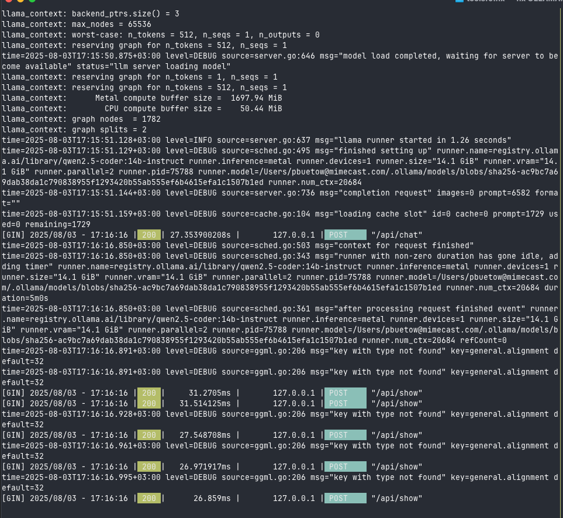
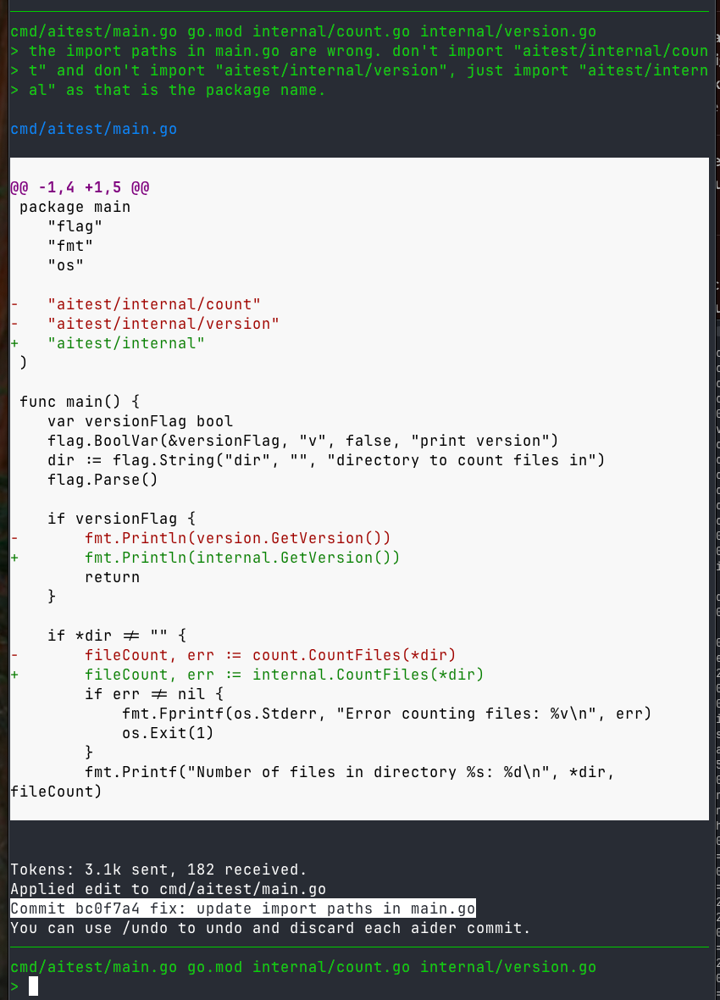
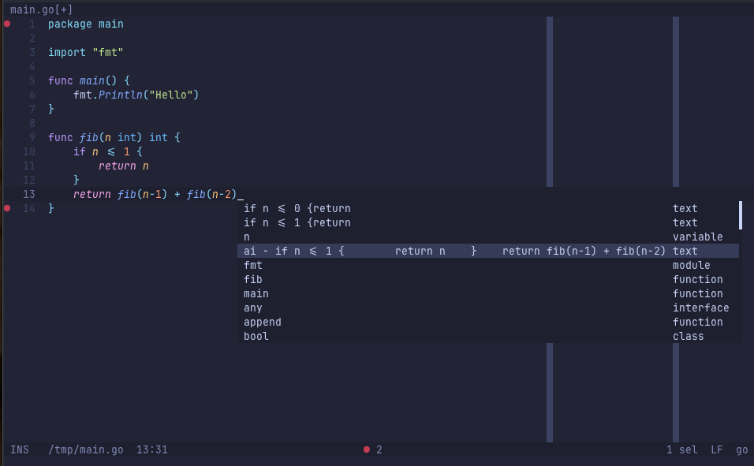

Local LLM for Coding with Ollama on macOS
Published at 2025-08-04T16:43:39+03:00
[::]
_| |_
/ o o \ |
| ∆ | <-- Ollama / \
| \___/ | / \
\_______/ LLM --> / 30B \
| | / Qwen3 \
/| |\ / Coder \
/_| |_\_________________/ quantised \
Table of Contents
With all the AI buzz around coding assistants, and being a bit concerned about being dependent on third-party cloud providers here, I decided to explore the capabilities of local large language models (LLMs) using Ollama.
Ollama is a powerful tool that brings local AI capabilities directly to your local hardware. By running AI models locally, you can enjoy the benefits of intelligent assistance without relying on cloud services. This document outlines my initial setup and experiences with Ollama, with a focus on coding tasks and agentic coding.
https://ollama.com/
Why Local LLMs?
Using local AI models through Ollama offers several advantages:
- Data Privacy: Keep your code and data completely private by processing everything locally.
- Cost-Effective: Reduce reliance on expensive cloud API calls.
- Reliability: Works seamlessly even with spotty internet or offline.
- Speed: Avoid network latency and enjoy instant responses while coding. Although I mostly found Ollama slower than commercial LLM providers. However, that may change with the evolution of models and hardware.
Hardware Considerations
Running large language models locally is currently limited by consumer hardware capabilities:
- GPU Memory: Most consumer-grade GPUs (even in 2025) top out at 16–24GB of VRAM, making it challenging to run larger models like the 30B (30 billion) parameter LLMs (they go up to the 100 billion and more).
- RAM Constraints: On my MacBook Pro with M3 CPU and 36GB RAM, I chose a 14B model (qwen2.5-coder:14b-instruct) as it represents a practical balance between capability and resource requirements.
For reference, here are some key points about running large LLMs locally:
- Models larger than 30B: I don't even think about running them locally. One (e.g. from Qwen, Deepseek or Kimi K2) with several hundred billion parameters could match the "performance" of commercial LLMs (Claude Sonnet 4, etc). Still, for personal use, the hardware demands are just too high (or temporarily "rent" it via the public cloud?).
- 30B models: Require at least 48GB of GPU VRAM for full inference without quantisation. Currently only feasible on high-end professional GPUs (or an Apple-silicone Mac with enough unified RAM).
- 14B models: Can run with 16-24GB GPU memory (VRAM), suitable for consumer-grade hardware (or use a quantised larger model)
- 7B-13B models: Best fit for mainstream consumer hardware, requiring minimal VRAM and running smoothly on mid-range GPUs, but with limited capabilities compared to larger models and more hallucinations.
The model I'll be mainly using in this blog post (qwen2.5-coder:14b-instruct) is particularly interesting as:
- instruct: Indicates this is the instruction-tuned variant, optimised for diverse tasks including coding
- coder: Tells me that this model was trained on a mix of code and text data, making it especially effective for programming assistance
https://ollama.com/library/qwen2.5-coder
https://huggingface.co/Qwen/Qwen2.5-Coder-14B-Instruct
For general thinking tasks, I found deepseek-r1:14b to be useful (in the future, I also want to try other qwen models here). For instance, I utilised deepseek-r1:14b to format this blog post and correct some English errors, demonstrating its effectiveness in natural language processing tasks. Additionally, it has proven invaluable for adding context and enhancing clarity in technical explanations, all while running locally on the MacBook Pro. Admittedly, it was a lot slower than "just using ChatGPT", but still within a minute or so.
https://ollama.com/library/deepseek-r1:14b
https://huggingface.co/deepseek-ai/DeepSeek-R1
A quantised (as mentioned above) LLM which has been converted from high-precision connection (typically 16- or 32-bit floating point) representations to lower-precision formats, such as 8-bit integers. This reduces the overall memory footprint of the model, making it significantly smaller and enabling it to run more efficiently on hardware with limited resources or to allow higher throughput on GPUs and CPUs. The benefits of quantisation include reduced storage and faster inference times due to simpler computations and better memory bandwidth utilisation. However, quantisation can introduce a drop in model accuracy because the lower numerical precision means the model cannot represent parameter values as precisely. In some cases, it may lead to instability or unexpected outputs in specific tasks or edge cases.
Basic Setup and Manual Code Prompting
Installing Ollama and a Model
To install Ollama, performed these steps (this assumes that you have already installed Homebrew on your macOS system):
brew install ollama
rehash
ollama serve
Which started up the Ollama server with something like this (the screenshots shows already some requests made):

And then, in a new terminal, I pulled the model with:
ollama pull qwen2.5-coder:14b-instruct
Now, I was ready to go! It wasn't so difficult. Now, let's see how I used this model for coding tasks.
Example Usage
I run the following command to get a Go function for calculating Fibonacci numbers:
time echo "Write a function in golang to print out the Nth fibonacci number, \
only the function without the boilerplate" | ollama run qwen2.5-coder:14b-instruct
Output:
func fibonacci(n int) int {
if n <= 1 {
return n
}
a, b := 0, 1
for i := 2; i <= n; i++ {
a, b = b, a+b
}
return b
}
Execution Metrics:
Executed in 4.90 secs fish external
usr time 15.54 millis 0.31 millis 15.24 millis
sys time 19.68 millis 1.02 millis 18.66 millis
Note, after having written this blog post, I tried the same with the newer model qwen3-coder:30b-a3b-q4_K_M (which "just" came out, and it's a quantised 30B model), and it was much faster:
Executed in 1.83 secs fish external
usr time 17.82 millis 4.40 millis 13.42 millis
sys time 17.07 millis 1.57 millis 15.50 millis
https://ollama.com/library/qwen3-coder:30b-a3b-q4_K_M
Agentic Coding with Aider
Installation
Aider is a tool that enables agentic coding by leveraging AI models (also local ones, as in our case). While setting up OpenAI Codex and OpenCode with Ollama proved challenging (those tools either didn't know how to work with the "tools" (the capability to execute external commands or to edit files for example) or didn't connect at all to Ollama for some reason), Aider worked smoothly.
To get started, the only thing I had to do was to install it via Homebrew, initialise a Git repository, and then start Aider with the Ollama model ollama_chat/qwen2.5-coder:14b-instruct:
brew install aider
mkdir -p ~/git/aitest && cd ~/git/aitest && git init
aider --model ollama_chat/qwen2.5-coder:14b-instruct
https://aider.chat
https://opencode.ai
https://github.com/openai/codex
Agentic coding prompt
This is the prompt I gave:
Create a Go project with these files:
* `cmd/aitest/main.go`: CLI entry point
* `internal/version.go`: Version information (0.0.0), should be printed when the
program was started with `-version` flag
* `internal/count.go`: File counting functionality, the program should print out
the number of files in a given subdirectory (the directory is provided as a
command line flag with `-dir`), if none flag is given, no counting should be
done
* `README.md`: Installation and usage instructions
It then generated something, but did not work out of the box, as it had some issues with the imports and package names. So I had to do some follow-up prompts to fix those issues with something like this:
* Update import paths to match module name, github.com/yourname/aitest should be
aitest in main.go
* The package names of internal/count.go and internal/version.go should be
internal, and not count and version.

Compilation & Execution
Once done so, the project was ready and I could compile and run it:
go build cmd/aitest/main.go
./main -v
0.0.0
./main -dir .
Number of files in directory .: 4
The code
The code it generated was simple, but functional. The ./cmd/aitest/main.go file:
package main
import (
"flag"
"fmt"
"os"
"aitest/internal"
)
func main() {
var versionFlag bool
flag.BoolVar(&versionFlag, "v", false, "print version")
dir := flag.String("dir", "", "directory to count files in")
flag.Parse()
if versionFlag {
fmt.Println(internal.GetVersion())
return
}
if *dir != "" {
fileCount, err := internal.CountFiles(*dir)
if err != nil {
fmt.Fprintf(os.Stderr, "Error counting files: %v\n", err)
os.Exit(1)
}
fmt.Printf("Number of files in directory %s: %d\n", *dir, fileCount)
} else {
fmt.Println("No directory specified. No count given.")
}
}
The ./internal/version.go file:
package internal
var Version = "0.0.0"
func GetVersion() string {
return Version
}
The ./internal/count.go file:
package internal
import (
"os"
)
func CountFiles(dir string) (int, error) {
files, err := os.ReadDir(dir)
if err != nil {
return 0, err
}
count := 0
for _, file := range files {
if !file.IsDir() {
count++
}
}
return count, nil
}
The code is quite straightforward, especially for generating boilerplate code this will be useful for many use cases!
In-Editor Code Completion
To leverage Ollama for real-time code completion in my editor, I have integrated it with Helix, my preferred text editor. Helix supports the LSP (Language Server Protocol), which enables advanced code completion features. The lsp-ai is an LSP server that can interface with Ollama models for code completion tasks.
https://helix-editor.com
https://github.com/SilasMarvin/lsp-ai
Installation of lsp-ai
I installed lsp-ai via Rust's Cargo package manager. (If you don't have Rust installed, you can install it via Homebrew as well.):
cargo install lsp-ai
Helix Configuration
I edited ~/.config/helix/languages.toml to include:
[[language]]
name = "go"
auto-format= true
diagnostic-severity = "hint"
formatter = { command = "goimports" }
language-servers = [ "gopls", "golangci-lint-lsp", "lsp-ai", "gpt" ]
Note that there is also a gpt language server configured, which is for GitHub Copilot, but it is out of scope of this blog post. Let's also configure lsp-ai settings in the same file:
[language-server.lsp-ai]
command = "lsp-ai"
[language-server.lsp-ai.config.memory]
file_store = { }
[language-server.lsp-ai.config.models.model1]
type = "ollama"
model = "qwen2.5-coder"
[language-server.lsp-ai.config.models.model2]
type = "ollama"
model = "mistral-nemo:latest"
[language-server.lsp-ai.config.models.model3]
type = "ollama"
model = "deepseek-r1:14b"
[language-server.lsp-ai.config.completion]
model = "model1"
[language-server.lsp-ai.config.completion.parameters]
max_tokens = 64
max_context = 8096
## Configure the messages per your needs
[[language-server.lsp-ai.config.completion.parameters.messages]]
role = "system"
content = "Instructions:\n- You are an AI programming assistant.\n- Given a
piece of code with the cursor location marked by \"<CURSOR>\", replace
\"<CURSOR>\" with the correct code or comment.\n- First, think step-by-step.\n
- Describe your plan for what to build in pseudocode, written out in great
detail.\n- Then output the code replacing the \"<CURSOR>\"\n- Ensure that your
completion fits within the language context of the provided code snippet (e.g.,
Go, Ruby, Bash, Java, Puppet DSL).\n\nRules:\n- Only respond with code or
comments.\n- Only replace \"<CURSOR>\"; do not include any previously written
code.\n- Never include \"<CURSOR>\" in your response\n- If the cursor is within
a comment, complete the comment meaningfully.\n- Handle ambiguous cases by
providing the most contextually appropriate completion.\n- Be consistent with
your responses."
[[language-server.lsp-ai.config.completion.parameters.messages]]
role = "user"
content = "func greet(name) {\n print(f\"Hello, {<CURSOR>}\")\n}"
[[language-server.lsp-ai.config.completion.parameters.messages]]
role = "assistant"
content = "name"
[[language-server.lsp-ai.config.completion.parameters.messages]]
role = "user"
content = "func sum(a, b) {\n return a + <CURSOR>\n}"
[[language-server.lsp-ai.config.completion.parameters.messages]]
role = "assistant"
content = "b"
[[language-server.lsp-ai.config.completion.parameters.messages]]
role = "user"
content = "func multiply(a, b int ) int {\n a * <CURSOR>\n}"
[[language-server.lsp-ai.config.completion.parameters.messages]]
role = "assistant"
content = "b"
[[language-server.lsp-ai.config.completion.parameters.messages]]
role = "user"
content = "// <CURSOR>\nfunc add(a, b) {\n return a + b\n}"
[[language-server.lsp-ai.config.completion.parameters.messages]]
role = "assistant"
content = "Adds two numbers"
[[language-server.lsp-ai.config.completion.parameters.messages]]
role = "user"
content = "// This function checks if a number is even\n<CURSOR>"
[[language-server.lsp-ai.config.completion.parameters.messages]]
role = "assistant"
content = "func is_even(n) {\n return n % 2 == 0\n}"
[[language-server.lsp-ai.config.completion.parameters.messages]]
role = "user"
content = "{CODE}"
As you can see, I have also added other models, such as Mistral Nemo and DeepSeek R1, so that I can switch between them in Helix. Other than that, the completion parameters are interesting. They define how the LLM should interact with the text in the text editor based on the given examples.
If you want to see more lsp-ai configuration examples, they are some for Vim and Helix in the lsp-ai git repository!
Code completion in action
The screenshot shows how Ollama's qwen2.5-coder model provides code completion suggestions within the Helix editor. LSP auto-completion is triggered by leaving the cursor at position <CURSOR> for a short period in the code snippet, and Ollama responds with relevant completions based on the context.

In the LSP auto-completion, the one prefixed with ai - was generated by qwen2.5-coder, the other ones are from other LSP servers (GitHub Copilot, Go linter, Go language server, etc.).
I found GitHub Copilot to be still faster than qwen2.5-coder:14b, but the local LLM one is actually workable for me already. And, as mentioned earlier, things will likely improve in the future regarding local LLMs. So I am excited about the future of local LLMs and coding tools like Ollama and Helix.
After trying qwen3-coder:30b-a3b-q4_K_M (following the publication of this blog post), I found it to be significantly faster and more capable than the previous model, making it a promising option for local coding tasks. Honestly, even my current local setup already handles routine coding stuff pretty well—better than I expected.
Conclusion
Will there ever be a time we can run larger models (60B, 100B, ...and larger) on consumer hardware, or even on our phones? We are not quite there yet, but I am optimistic that we will see improvements in the next few years. As hardware capabilities improve and/or become cheaper, and more efficient models are developed (or new techniques will be invented to make language models more effective), the landscape of local AI coding assistants will continue to evolve.
For now, even the models listed in this blog post are very promising already, and they run on consumer-grade hardware (at least in the realm of the initial tests I've performed... the ones in this blog post are overly simplistic, though! But they were good for getting started with Ollama and initial demonstration)! I will continue experimenting with Ollama and other local LLMs to see how they can enhance my coding experience. I may cancel my Copilot subscription, which I currently use only for in-editor auto-completion, at some point.
However, truth be told, I don't think the setup described in this blog post currently matches the performance of commercial models like Claude Code (Sonnet 4, Opus 4), Gemini 2.5 Pro, the OpenAI models and others. Maybe we could get close if we had the high-end hardware needed to run the largest Qwen Coder model available. But, as mentioned already, that is out of reach for occasional coders like me. Furthermore, I want to continue coding manually to some degree, as otherwise I will start to forget how to write for-loops, which would be awkward... However, do we always need the best model when AI can help generate boilerplate or repetitive tasks even with smaller models?
E-Mail your comments to paul@nospam.buetow.org :-)
Other related posts are:
2025-08-05 Local LLM for Coding with Ollama on macOS (You are currently reading this)
2025-06-22 Task Samurai: An agentic coding learning experiment
Back to the main site